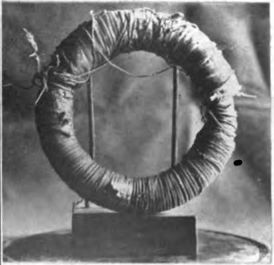
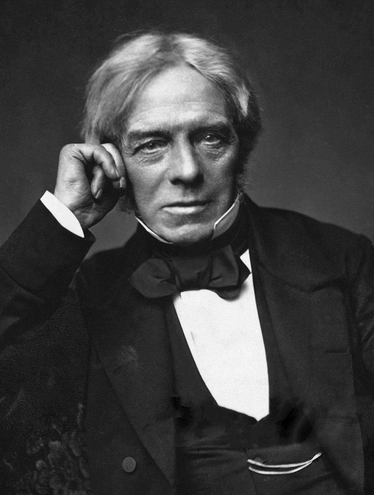

전자기 유도가 발견되기까지

패러데이의 고리 코일 장치 · Wikimedia Commons, Public domain
1820 — 외르스테드가 전류가 흐르는 전선 근처에서 나침반 바늘이 움직이는 것을 관찰해 전기와 자기의 연결을 확인했다. (발견 상황은 자료마다 조금씩 다르게 전해진다)
1821 — 패러데이가 전자기 회전을 연구해 최초의 전기 모터 원리를 보였다. 이후 그는 다른 연구에도 힘을 쏟았다.
1831. 8. 29 — 전자기 연구를 본격적으로 재개해, 쇠고리 양쪽에 감은 코일로 상호 유도를 발견했다.
1831 가을 — 자석을 코일에 직접 넣고 빼는 실험으로, 움직이는 자석도 전류를 만든다는 것을 확인했다.
1831년 실험이 알려 준 것
자석이 없어도 된다
한쪽 코일의 전류를 켜고 끄면 그 코일이 만드는 자기장이 변하고, 다른 코일에 전류가 유도된다. 이것을 상호 유도라고 한다.
결정적인 관찰
전류를 계속 흘려 두는 동안에는 아무 일도 없었고, 스위치를 넣는 순간과 끊는 순간에만 바늘이 움직였다.
두 실험이 같은 결론에 이른다 — 전류를 만드는 것은 자석 자체도, 전류 자체도 아니라 코일을 통과하는 자기장의 변화다.
사람과 출처

Michael Faraday · Public domain
마이클 패러데이 (1791–1867)
대장장이의 아들로 태어나 책 제본 견습생으로 일했다. 제본하던 책을 읽으며 과학에 빠졌고, 수학 훈련을 거의 받지 못해 평생 실험과 그림으로 사고했다.
[심화] 전자기파는 어떻게 생기나
맥스웰의 정리
변하는 자기장이 전기장을 만든다는 사실(전자기 유도)에, 변하는 전기장도 자기장을 만든다는 항을 더해 전자기 법칙을 완성했다.
파동으로 퍼진다
이 법칙에서 전기장과 자기장이 함께 진동하며 공간으로 퍼져 나가는 파동이 나온다. 매질이 없어도 진행한다.
빛도 그중 하나
계산된 속력이 초속 약 30만 km로 당시 알려진 빛의 속력과 같았다. 빛이 전자기파임이 드러났다.
라디오·와이파이·리모컨·전자레인지·엑스선은 진동수만 다른 같은 종류의 파동이다. 안테나는 전자를 빠르게 진동시켜 이 파동을 내보낸다.
[심화] 전압과 전류의 봉우리가 어긋날 때
저항만 — 전구처럼 저항뿐이면 전압과 전류가 나란히 오르내린다 (위상차 0).
코일이 있으면 — 전류가 커지려는 변화를 코일이 방해해 전류가 전압보다 뒤늦게 따라온다.
주의 — 위상차는 발전기의 성질이 아니라 연결한 부하에 따라 달라진다. 여기 값은 예시다.
이미지 출처
- · 흔들이 손전등 — Chetvorno, Wikimedia Commons, CC0
- · 코일·검류계 실험 도해 — Eviatar Bach, Wikimedia Commons, CC0
- · 패러데이 고리 코일 / 초상 — Wikimedia Commons, Public domain
- · 수력 발전기 단면 — U.S. Army Corps of Engineers, Public domain
- · 허브 다이너모 — Sylenius, CC BY-SA 3.0
- · 다이내믹 마이크 — Master dpo, CC BY-SA 3.0
- · 인덕션 열화상 — CharlesMJames, CC BY-SA 4.0